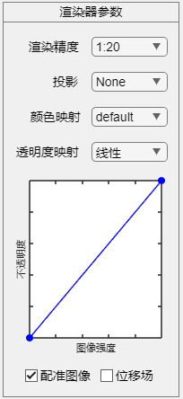

2.2.1 渲染器

2.2.1.1 渲染精度
渲染精度可选1:40, 1:20, 1:10, 1:5, 意味着图像中的一个像素对应实际数据中的像素数量。更低的渲染精度对应更流畅的体积浏览。
2.2.1.2 投影
投影可选None, XY, XZ, YZ, 其中None对应默认三维视角，XY, XZ, YZ分别对应相应地平面视角。
2.2.1.3 颜色映射
颜色映射用于调整位移场中归一化位移矢量的可视化风格。可选所有MATLAB支持的已定义颜色图。
2.2.1.4 透明度映射
透明度映射用于调整三维体的可视化风格，通过分段线性映射增强或减弱体积图像不同强度值对应的透明度。可选线性, MRI,
MRI-MIP, CT-软组织，CT-MIP。通过图像强度—不透明度窗口交互，可自定义分段线性映射以获得特定的可视化效果。
注1：窗口交互方式为在调谐曲线上单击将新增调谐点，调谐点将跟随鼠标位置，直至再次单击锁定调谐点。
注2：自定义调谐点一旦确定将无法更改。